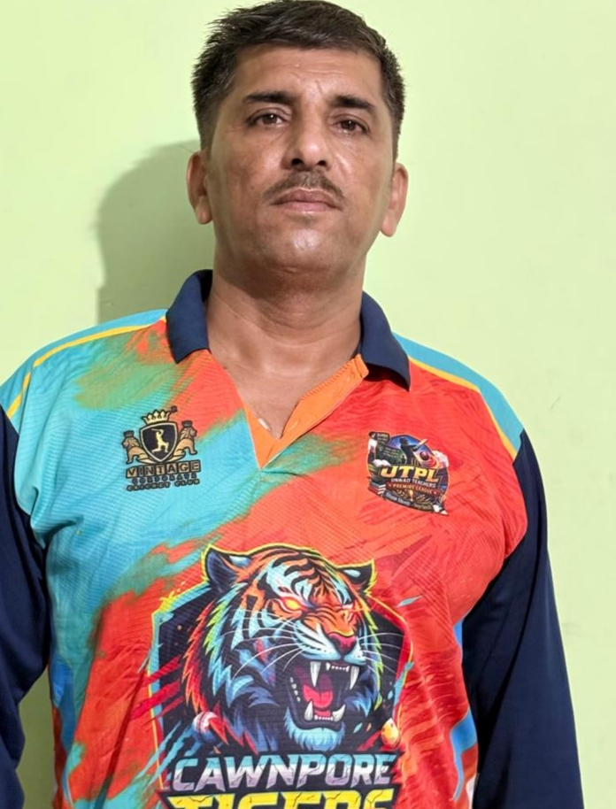

Together We Roar, Together We Win

Role : Right Arm Medium Fast Opening Bowler
Jersey No : 09
Batting : Right Hand Batsman
Bowling : Right Arm Medium Fast
Deepak is a right-hand batsman and right-arm medium fast opening bowler for CAWNPORE TIGERS XI. He leads the bowling attack with the new ball and is known for accuracy, discipline and providing early breakthroughs for the team.
⬅ Back to HomeJersey
Bowling
Batting
Role